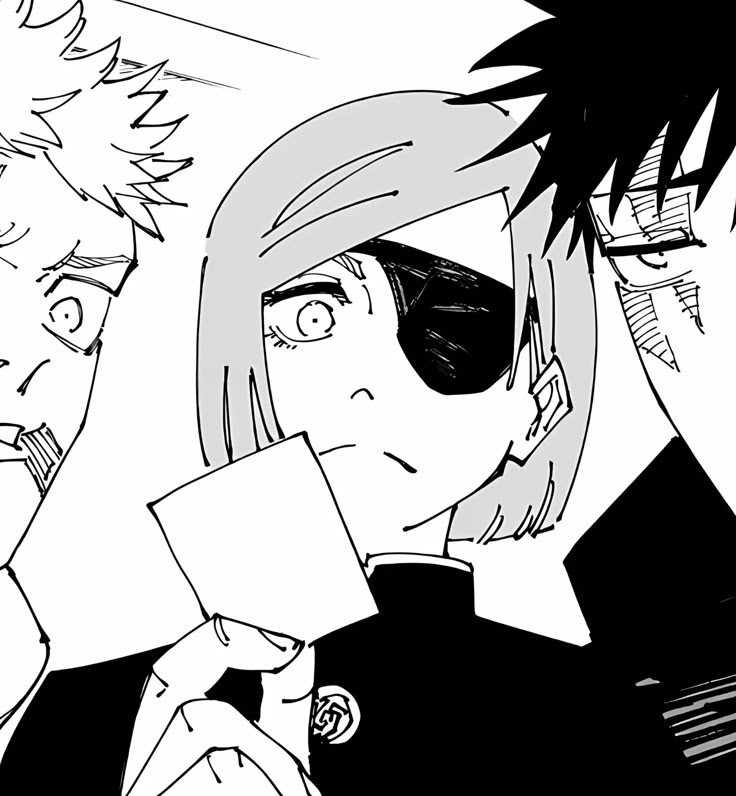

Momo Nishimiya insultou Yuji durante o Evento de Intercâmbio enquanto tentava justificar a atitude indesejável de Mai Zenin, irritando Nobara. Nobara não gosta de Mai, o que deixou Momo com raiva e a fez monologar sobre a discriminação baseada em gêneros no Clã Zenin. Isso só serviu para irritar Nobara, que não podia se importar menos com sentimentos baseados em "garotos contra garotas". Como Saori, Maki é uma boa pessoa apesar das circunstâncias que a cercam, enquanto Mai não é. Nobara não acredita que as pessoas são justificadas só porque vêm de uma origem difícil. Ela abertamente rejeitou Momo e a disse para considerar o tipo de pessoa que Yuji era antes de condená-lo, citando que a vida não é apenas um trabalho.